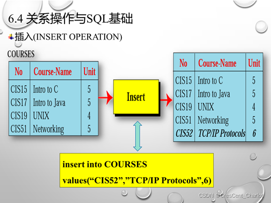
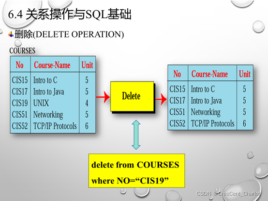
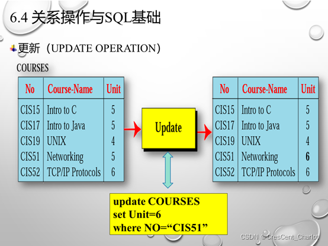
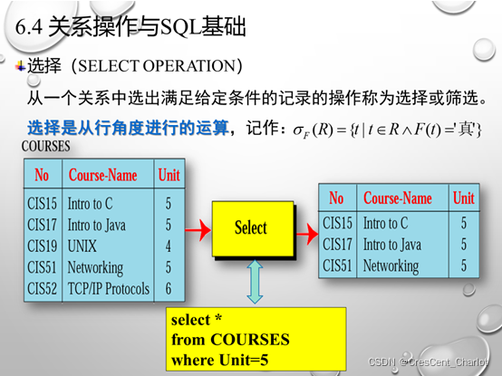
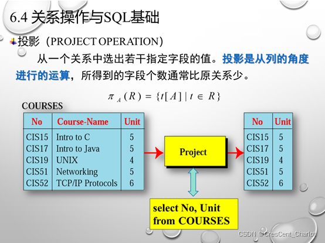
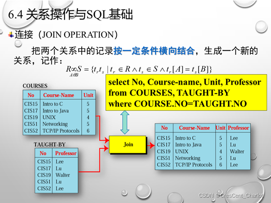
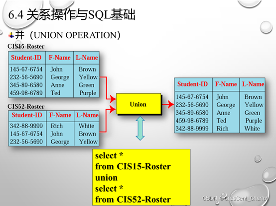
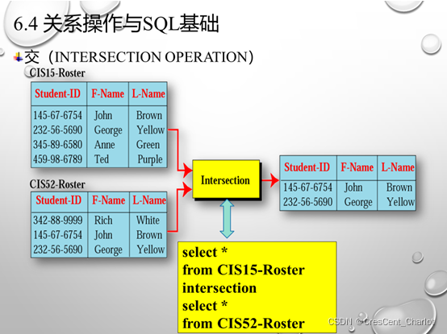
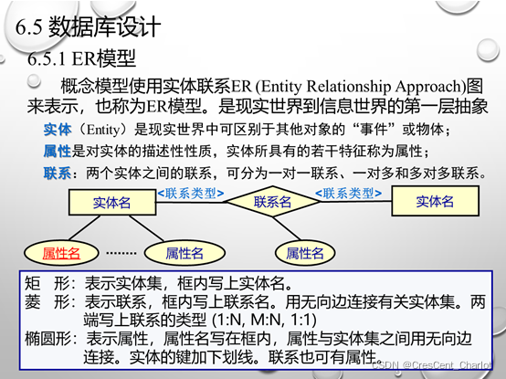

BJFU|计算机导论（21下）第六章-数据库
前言：
计算机导论是笔者大学期间第一门结课的专业课，也是在这门课上笔者取得了大学生活中第一次满分。笔者近日整理文件发现笔记数十页，不忍抛弃，因稍加整理后发布于此。
内容共八章，涵盖了计算机类专业学生的基础知识。**对于行业初学者，可以提供一个专业的视角以便后续选择进一步发展方向；对于业外人士，也可做科普性质文章对待。**需要注意的是，笔记并不等于确切的、已知的考点，请校友（尤其是同门师弟师妹们）理性对待此资料，认真听讲，认真复习。
后续章节将会逐步更新，请各位读者静候。
考点整理：
数据库是长期存储在计算机内的有组织的、可共享的、统一管理的相关数据集合。
数据与数据模型之间的关系：数据库中数据不是孤立的，数据之间相互关联。数据库中不仅要表示数据本身，还要表示数据之间的联系。数据模型定义了数据的逻辑设计，也描述了数据之间的联系。
数据库的特点是：数据按一定的数据模型组织、描述和存储，具有较低的数据冗余度和较高的数据独立性，可以为多个用户共享。
常见的数据模型：
层次模型：用树形结构表示实体之间联系。
网状模型：用网络结构表示实体之间联系。
关系模型：一张二维表，由行和列组成。是使用最广泛的数据模型。
由一组关系组成的数据库称为关系数据库，关系数据库采用关系数据模型作为数据组织方式。
关系数据库是目前应用最广泛，也是最重要、最流行的数据库。
SQL（Structured Query Language）结构化查询语言，是用于关系数据库的标准化语言。
关系操作包括插入、删除、更新、选择、投影、连接、并、交和差等。
数据独立性是指不会因为某些存储结构变化而影响其他存储结构
数据库中视图只存放定义。
关系数据库术语：
表：行和列组成的二维表
字段：表中的列
记录：（元组）表中的行
域：字段取值范围
关键字：表中不出现重复值的字段（可以是字段的集合）
字段类型：
表规则：表中每一个字段是类型相同的数据、字段不能重名、表中任意两条记录不能完全相同
关系数据库： SQL Server：1988年与微软开发出第一版 Oracle：甲骨文公司
选择是从行角度进行的运算，投影是从列角度进行的运算。








数据库设计的基本步骤：需求分析、概念结构设计、逻辑结构设计、数据库物理设计、数据库实施、数据库运行、数据库维护。

满足一定条件的关系模式称为范式。
第一范式：所有分量都必须是不可分的最小数据项。
第二范式：如果一个关系属于第一范式且所有非主关键字段都完全依赖于主关键字。
第三范式：如果一个关系属于第二范式且每个非关键字不传递依赖于主关键字
数据库系统（DBS）是指在计算机系统中引入数据库后的系统，特点是数据应用。主要由数据库、数据库用户、计算机硬件系统和计算机软件系统组成。
数据库管理系统（DBMS）是对数据进行管理的大型系统软件，是数据库系统的核心组成部分，用户在数据库系统中的一切操作，包括数据定义、查询、更新及各种控制，都是通过DBMS进行的。
数据库管理系统的功能：数据库定义功能、数据库管理功能、数据库建立和维护功能、数据组织存储和管理功能、通信功能。
模式规范化的必要性：
既不必存储不必要的重复信息，又可以方便地获取信息。
规范化的目的：
依据函数依赖来改造关系模式，通过分解关系模式来消除其中不合适的数据依赖，将一个低一级范式的关系模式转换为若干个高一级范式的关系模式的集合，以解决插入异常、删除异常和数据冗余问题。
数据库系统中物理数据独立性是指应用程序与存储在磁盘上数据库的物理模式是相互独立的。
数据库管理系统能实现对数据库中数据的查询、插入、修改和删除等操作的数据库语言称为数据操纵语言DML。
 支付宝打赏
支付宝打赏
 微信打赏
微信打赏
如果觉得好用请支持我